MoboXTerm Trials
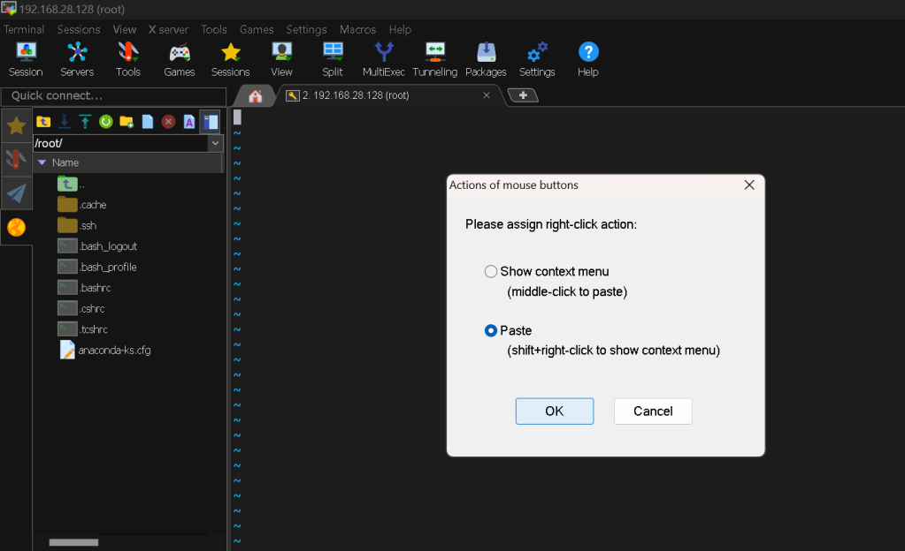
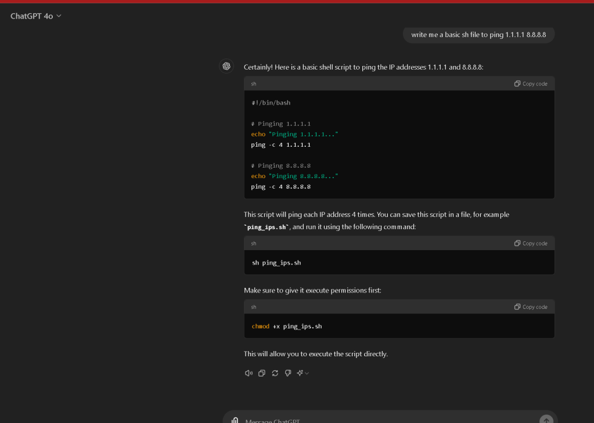
`#!/bin/bash
Pinging 1.1.1.1
echo "Pinging 1.1.1.1..."
ping -c 4 1.1.1.1
Pinging 8.8.8.8
echo "Pinging 8.8.8.8..."
ping -c 4 8.8.8.8
`
Linting works >>> big plus
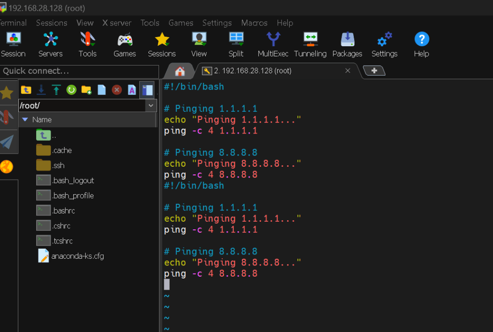
What I did >
Sure, here's a blog post that explains the shell script you provided:
Automating Network Checks with a Simple Shell Script
In the world of IT and networking, ensuring that your connections are working smoothly is crucial. One common way to test network connectivity is by using the ping command. But running the command manually every time can be tedious. Fortunately, with the power of shell scripting, we can automate this process to save time and effort.
What is ping?
The ping command is a network utility used to test the reachability of a host on an IP network. It works by sending Internet Control Message Protocol (ICMP) Echo Request messages to the target host and waits for an ICMP Echo Reply. Essentially, it checks whether a specific IP address is accessible.
Writing the Shell Script
Let's dive into writing a simple shell script that pings two IP addresses: 1.1.1.1 and 8.8.8.8. These addresses are well-known DNS servers provided by Cloudflare and Google, respectively.
Here's the script:
!/bin/bash
Pinging 1.1.1.1
echo "Pinging 1.1.1.1..."
ping -c 4 1.1.1.1
Pinging 8.8.8.8
echo "Pinging 8.8.8.8..."
ping -c 4 8.8.8.8
Explanation of the Script
-
Shebang (
#!/bin/bash): This line tells the system that the script should be run using the Bash shell. -
Echo and Ping Commands:
echo "Pinging 1.1.1.1..." prints a message to the terminal indicating which IP address is being pinged.
-
ping -c 4 1.1.1.1sends 4 ICMP Echo Request packets to the IP address1.1.1.1. The-c 4option limits the number of packets sent to 4. -
Similarly, the same commands are repeated for the IP address
8.8.8.8.
Running the Script
To use this script, follow these simple steps:
-
Save the Script: Save the script in a file, for example,
ping_ips.sh. -
Make the Script Executable: Before you can run the script, you need to make it executable. Open your terminal and run:
chmod +x ping_ips.sh -
Execute the Script: Now you can run the script by typing:
bash ./ping_ips.sh
Linting Your Script
Linting is a great practice to ensure your code is clean and free of common mistakes. While shell scripts don't typically have linters like some programming languages, tools like shellcheck can help. To use shellcheck:
-
Install ShellCheck: On a Debian-based system, you can install it using:
sudo apt-get install shellcheck -
Run ShellCheck: To lint your script, simply run:
bash shellcheck ping_ips.sh
This will analyze your script and provide feedback on potential issues, helping you maintain high-quality code.
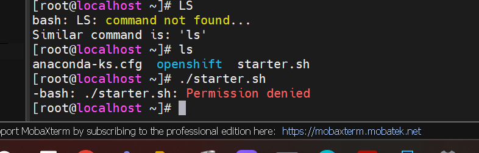
Gpt to get the access script
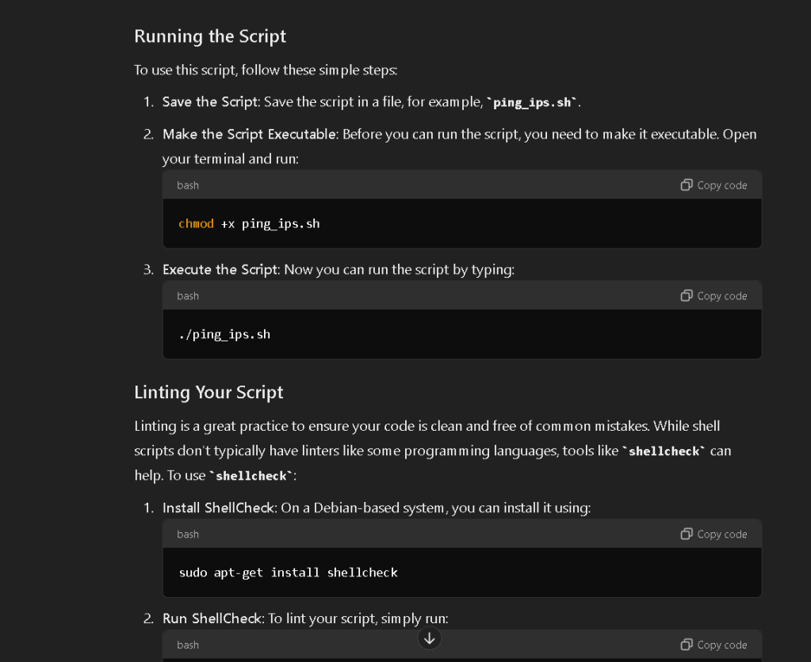
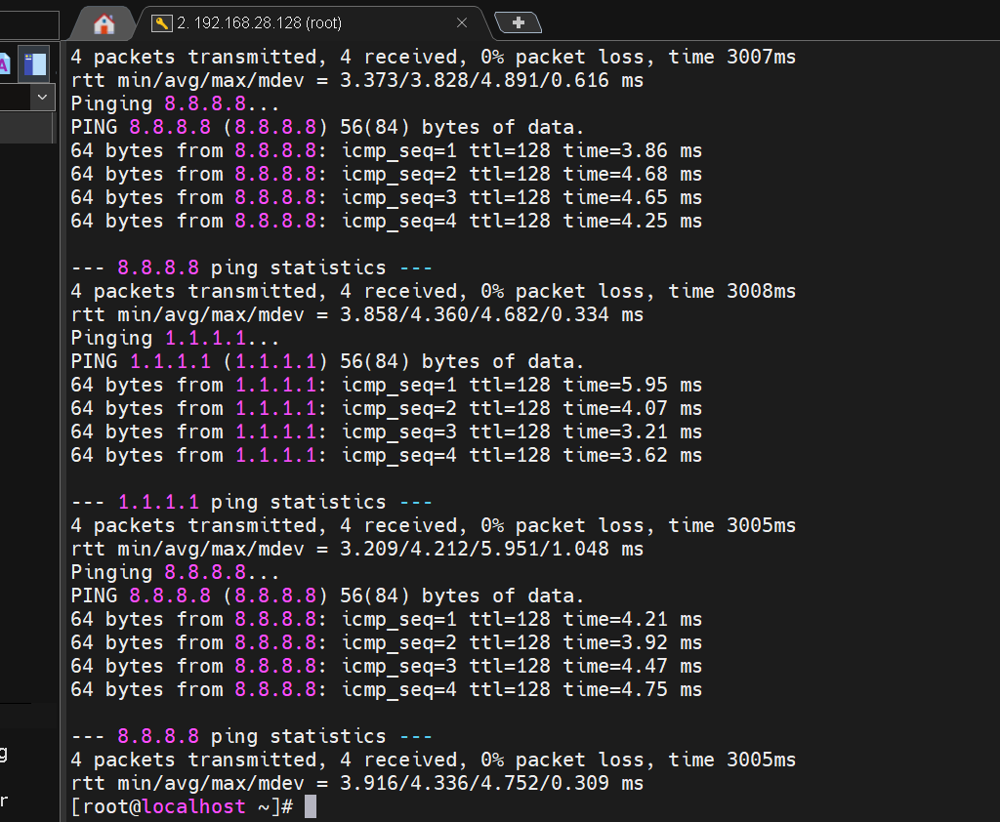
Fix issues
no need for external libraries
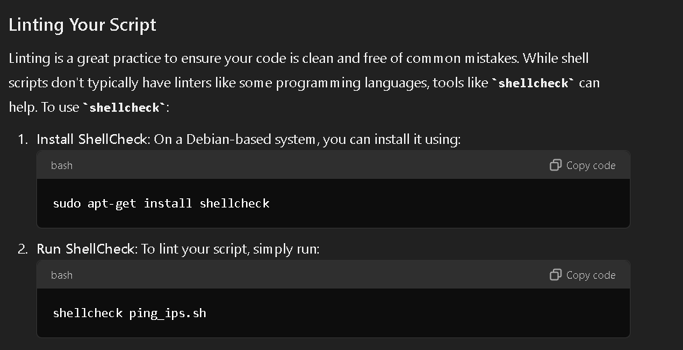
know how to exit vi
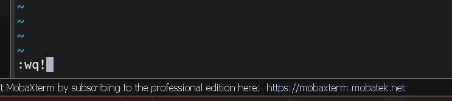
Asked on how to do the powershell
x > https://x.com/rifaterdemsahin/status/1818275433605210432
gpt >
To use PowerShell in MobaXterm, follow these steps:
-
Install MobaXterm:
- Ensure you have MobaXterm installed on your system. If not, download it from the official website and install it. -
Launch MobaXterm:
- Open the MobaXterm application. -
Start a Local Terminal Session:
- Click on the "Start local terminal" button. This will open a new terminal window within MobaXterm. -
Start PowerShell:
- In the terminal window, typepowershelland press Enter. This will switch the terminal session to a PowerShell session. -
Using PowerShell Commands:
- You can now use PowerShell commands as you normally would. For example, you can list files usingGet-ChildItem, manage services, and perform other administrative tasks.
Creating a Custom Session for PowerShell
If you frequently use PowerShell, you might want to create a custom session for it:
-
Create a New Session:
- Click on the "Sessions" menu in the top toolbar.
- Select "New session". -
Choose a Terminal Type:
- In the new session dialog, choose "Shell" under the "Local terminal" section. -
Configure the Session:
- In the "Shell" session configuration, set the shell topowershell. You can do this by enteringpowershellin the "Specify your own shell" field. -
Save and Start the Session:
- Click "OK" to save the session configuration.
- This will create a new session shortcut for PowerShell that you can easily access from the Sessions tab in the future.
By following these steps, you can use PowerShell within MobaXterm efficiently. If you have any specific tasks or scripts you want to run in PowerShell, feel free to share them, and I can provide more detailed guidance.
Shell > Powershell
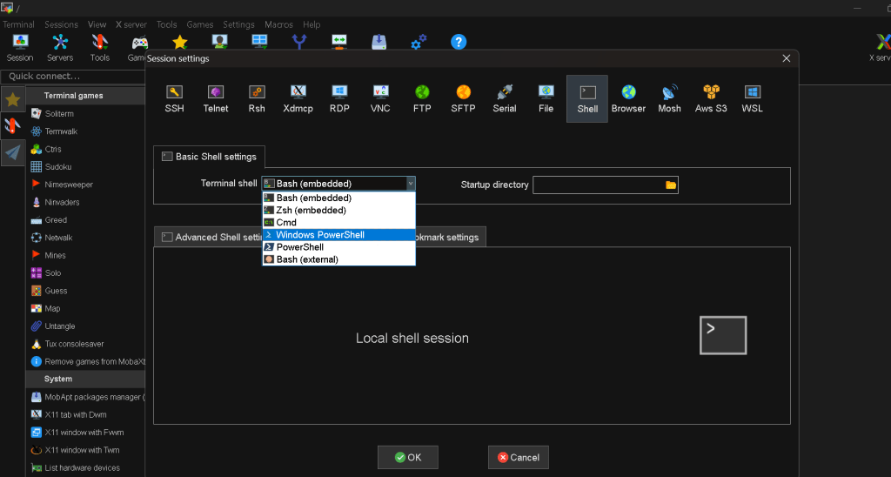
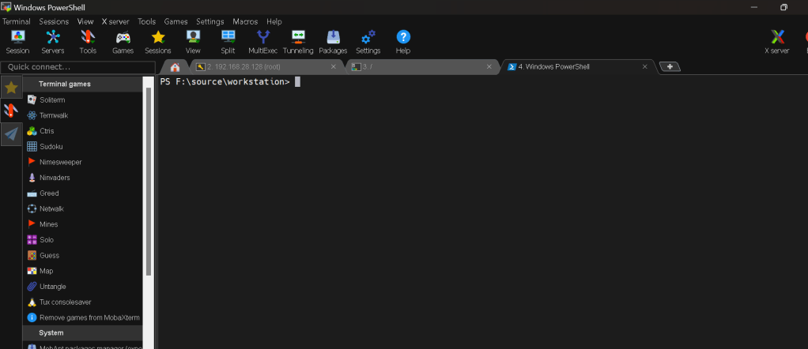
be able tyo use your scripts
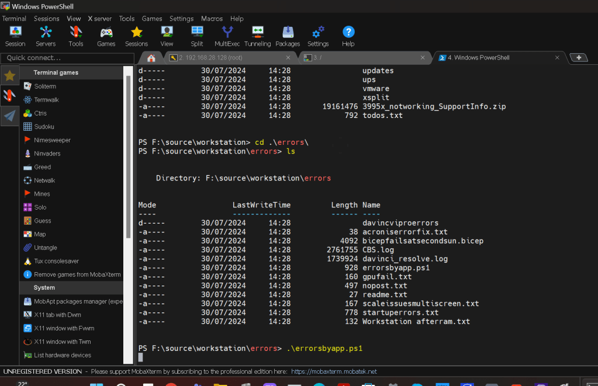
Imported from rifaterdemsahin.com · 2024